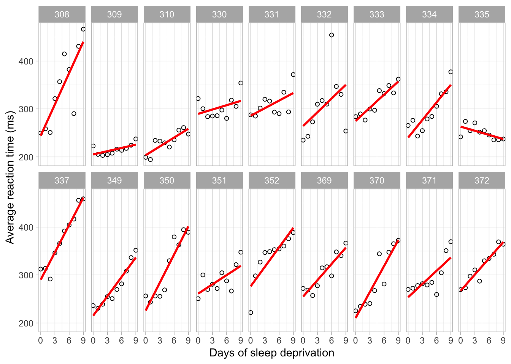
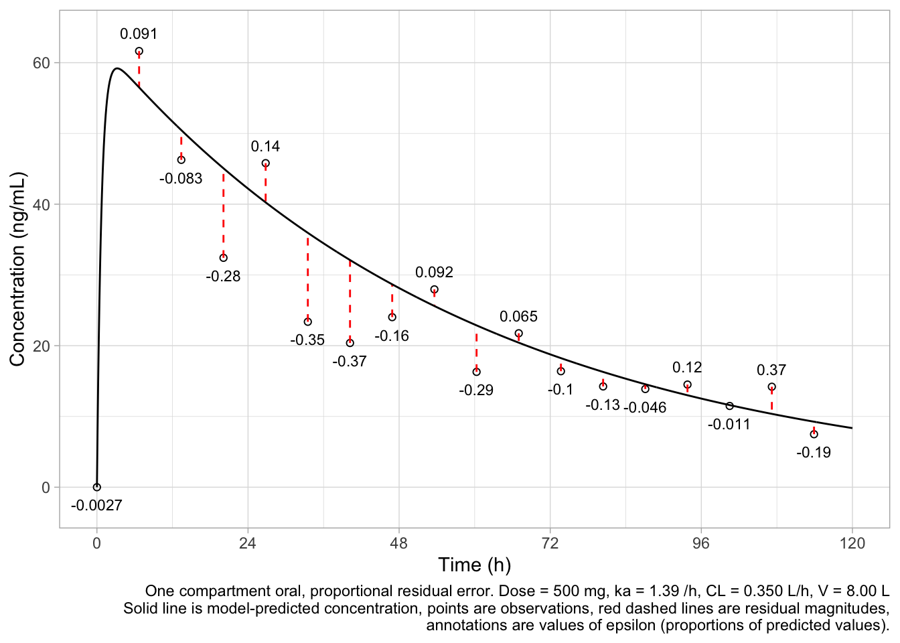
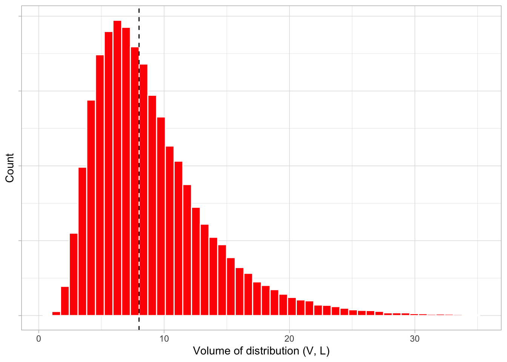

4 A brief introduction to nonlinear mixed-effects modeling
This introductory chapter serves as a brief overview of mixed-effects models as they’re used in pharma. It is by no means complete or exhaustive. If you’d like to learn more, we direct you to the seminal work on this topic, Pinheiro and Bates (1), as well as the comprehensive summary of the topic by Ezzet and Pinheiro (2).
4.1 Mixed effects models
Longitudinal data such as plasma concentrations or effect measurements are often collected as repeated measures - more than one measurement is collected from a single subject over time. Measurements collected from the same subject are usually correlated to some degree, which means that the usual ways of applying statistical models to data are not really appropriate, since they assume that every single sample is independent of every other sample, which is of course not the case in this situation. Mixed-effects models handle this by allowing the correlation between samples taken from a discrete individual to be taken into account (or to put it another way, they allow for between-subject variability). They do this through what are called random effects.
4.1.1 Linear mixed effect (LME) models
Linear mixed-effects (LME) models usually deal with situations in which one’s response variable can be described as a linear function of both the fixed effects (things which do not vary, such as predictors, or typical values of model parameters) and the random effects. LMEs extend simple linear models to allow both fixed and random effects, and are most often used when observations are not independent of one another, as might arise from a hierarchical structure. For example, patients could be sampled from within treatment groups or study sites.
When there are multiple levels to be considered, such as patients receiving the same dose of a drug but at different sites, the variability in the response can be thought of as being either “within group” or “between group”. Patient-level observations are not independent, since (following our example) they are expected to be more similar within a study site. Units sampled at the highest level, however (in our example, a treatment arm) are independent.
To analyse these data, one would need to consider outcome in terms of both study site and dose.
Consider what we might assume is the true regression slope in the population, \(\beta\), and that we’re able to estimate it as \(\hat{\beta}\). This is a fixed effect. In contrast, random effects are parameters that can be thought of as random variables. For example, we could say that \(\beta\) is a normally-distributed random variable with mean \(\mu\) and standard deviation \(\sigma\). So, formally:
\[ \beta \sim N(\mu, \sigma) \]
A LME model for outcome y might formally be defined as follows:
\[ y=X\beta+Zu+\epsilon \]
Here, \(y\) is the outcome variable we’re interested in. We can think of it as a matrix of \(N\) x 1, where \(N\) is the number of patients. \(X\) is an \(N\) x \(p\) matrix of \(p\) predictor variables (such as age, weight, and sex, variables that take unique values for each of the \(N\) patients). \(\beta\) is a \(p\) x 1 vector of the regression coefficients for each of the \(p\) predictors. \(Z\) is the \(N\) x \(qJ\) design matrix for the \(q\) random effects and the \(J\) groups of interest; \(u\) is a \(qJ\) x 1 vector of \(q\) random effects for \(J\) groups. Finally, \(\epsilon\) is an \(N\) x 1 vector describing the residuals (the part of \(y\) not described by the rest of the model, \(X\beta + Zu\)).
This sounds very complex, especially if you haven’t got a PhD in statistics. It really isn’t. Let’s illustrate it with a simple example from the lmer package developed by Bates and colleagues based on a sleep deprivation study by Belenky et al (3,4). In this study, 18 subjects had their normal amount of sleep on Day 0, but starting that night they were restricted to 3 hours of sleep per night. Average reaction time in milliseconds (Reaction) was the outcome, recorded through a series of tests given each Day to each Subject.
As we can see here, reaction time for most subjects increases with duration of sleep deprivation, but the slope is different. Reaction time observations within each subject are not independent of one another, so we can’t just pool everything. This is where mixed effects come in.
This is a fairly basic example, since we only have three bits of data we can use (Subject, Day and Reaction). So:
\[ y_{i,j}=Day_{i,j} \cdot Slope_i + \epsilon \]
where
\[ Slope_i=\theta_{Slope} +\eta_{Slope,i} \]
Here, \(y_{i,j}\) is reaction time in individual \(i\) on day \(j\), \(Slope_i\) is the regression slope relating reaction time and day, \(\theta_{Slope}\) is the typical slope in the population, \(\eta_{Slope}\) is between-subject variability in slope, defined as being normally distributed with mean 0 and variance \(\omega^2\), and \(\epsilon\), as before, is residual variability, defined as being normally distributed with mean 0 and variance \(\sigma^2\). The nlmer function in lme4 can handle this pretty easily:
lmer(Reaction ~ Days + (Days | Subject), sleepstudy)Linear mixed model fit by REML ['lmerMod']
Formula: Reaction ~ Days + (Days | Subject)
Data: sleepstudy
REML criterion at convergence: 1743.628
Random effects:
Groups Name Std.Dev. Corr
Subject (Intercept) 24.741
Days 5.922 0.07
Residual 25.592
Number of obs: 180, groups: Subject, 18
Fixed Effects:
(Intercept) Days
251.41 10.47 This output indicates that our fixed effects, \(\beta\), are 251.4 ms and 10.47 ms/day, corresponding to the typical intercept and slope in the population. In this model, we’ve also been able to estimate random effects on both of these parameters: their standard deviations are estimated to be 24.74 ms and 5.92 ms/day, respectively. This tells us that each subject can have a different intercept and a different slope, but on average, reaction time increases by 10.47 ms per day, and reaction time with no sleep deprivation is 251.4 ms in this small population.
So far, so good. But pharmacology is a bit more complicated than this, and we’re going to need more firepower.
4.1.2 Nonlinear mixed-effect (NLME) models
Nonlinear mixed-effects (NLME) modeling has emerged as a powerful statistical framework that addresses the inherent variability observed in real-world data. Rooted in the field of mixed-effects modeling, which accounts for both fixed effects (population-level parameters, things which are common across populations) and random effects (individual-specific deviations from what is typically seen in a population), as we’ve briefly looked at above, the nonlinear variant takes on the challenge of describing complex and nonlinear relationships between variables. This approach found its origins in the realms of pharmacology and biology, where it was first employed to analyze drug concentrations over time and has been extended subsequently to such diverse domains such as ecology, engineering, and the social sciences.
At its core, NLME modeling embraces the idea that underlying dynamic processes - such as changes in drug concentration in an individual, or a population of individuals, over time - can be captured accurately by sets of mathematical equations. Unlike linear models, which assume constant relationships, nonlinear models account for intricate nonlinear dynamics that better reflect the complexities of biological, physical, and social systems. The incorporation of random effects acknowledges that while general trends are present across individuals or subjects, deviations from these trends can arise due to inherent biological variability, measurement errors, or other unobserved factors. Consider: if persons A and B are given the same dose of a specific drug at the same time, plasma drug concentration at some later time T in person A is not going to be the same as plasma drug concentration at the same time T in person B, although it might be similar. There are all kinds of reasons why this might be the case, but we can never measure all of them, and that’s where random effects come in. They help us understand just how similar - or different - those concentrations are, and whereabouts in our modelled system these differences might be coming from.
One of the most prominent and impactful applications of nonlinear mixed-effects modeling is found in pharmacokinetics (PK) and pharmacodynamics (PD). PK concerns the study of drug absorption, distribution, metabolism, and excretion in the body, while PD explores the drug’s effects on the body. Compartmental models, a subset of nonlinear mixed-effects models, use a series of interconnected compartments to represent drug movement through the body. These models facilitate the estimation of critical parameters such as clearance (CL), volume of distribution (V), and absorption rate (ka), which are crucial for optimizing drug dosing regimens.
In the realm of drug development, nonlinear mixed-effects models enable researchers to better understand the variability in drug response across different individuals, allowing the optimization of drug therapy for a given population, and the application of personalized dosing strategies. This has profound implications for enhancing treatment efficacy while minimizing adverse effects. Additionally, these models facilitate the exploration of drug-drug interactions and the impact of patient characteristics (such as age, weight, genetics) on drug response.
Beyond pharmacology, nonlinear mixed-effects models find applications in diverse fields. In ecology, they capture population dynamics influenced by both intrinsic growth and extrinsic environmental factors. In social sciences, they analyze longitudinal data with individual-specific trajectories influenced by time-varying covariates. By providing a nuanced understanding of complex systems, nonlinear mixed-effects modeling empowers researchers to make informed decisions and predictions in the face of intricate variability and nonlinear dynamics.
But it’s pharmacology we’re here for, isn’t it! Let’s have a look at a single-dose oral one-compartment model, one of the simplest cases we’re likely to encounter.
\[ C(t) = \frac{F \cdot Dose \cdot k_a}{V(k_a - k)}[e^{-kt}-e^{-k_at}] \]
Here, \(C(t)\) is drug concentration in the central compartment at time \(t\), which is a function of bioavailability \(F\), drug dose \(Dose\), absorption rate \(k_a\), central volume of distribution \(V\) and elimination rate \(k\). In this system, we could imagine having two major sources of error to consider: random unexplained error, which could derive from errors in assays, measurement times, and so on, and between-subject error, which relate to differences in model parameters (\(k_a\), \(V\), \(k\), \(F\)) between subjects (which might derive from differences in body size, body composition, enzyme expression and any number of other factors).
We can express \(C(t)\) formally as follows:
\[ C_{ij}(t) = f(\theta_i, Dose_j, t)[1+\epsilon_{ij}(t)] \]
where \(C_{ij}(t)\) is the measured concentration of drug in individual \(i\) at dose \(j\) at time \(t\), \(f(\theta_i, Dose_j, t)\) is its corresponding prediction, \(\theta_i\) is the vector of model parameters for individual \(i\) (i.e. \(k_{a,i}\), \(V_i\), \(k_i\) and \(F_i\)), \(Dose_j\) is dose \(j\), and \(\epsilon_{ij}(t)\) is residual variability, defined as being normally distributed with mean 0 and variance \(\sigma^2\). In this example, it is proportional to concentration. The model parameters in this example are considered to be log-normally distributed with mean 0 and variance \(\omega^2\), for example:
\[ V_i = V \cdot \text{exp}(\eta_{V,i})\\ \eta_{V,i} \sim N(0, \omega_V) \]
The functional form of \(f\) can of course vary depending on the model being considered (in this case, still the oral one-compartmental PK model).
Less commonly used, and the subject of heated debate in some quarters, is between-occasion variability - the variability observed within patients but between sampling occasions (5). At the time of writing, between-occasion variability is not supported by nlmixr2, but we include it here for completeness. Continuing with our example, it can be expressed as follows:
\[ V_i = V \cdot \text{exp}(\eta_{V,i} + \kappa_{V,ij})\\ \eta_{V,i} \sim N(0, \omega_V)\\ \kappa_{V,ij} \sim N(0, \pi_V) \]
Here we have added the independently-distributed random effect \(\kappa_{V,ij}\), representing between-occasion variability in individual \(i\) at measurement occasion \(j\), assumed normally distributed with mean 0 and variance \(\pi^2\).
So what does this all mean in practice? Let’s look at our simple 1-compartment model. First, consider the residual error, which describes the difference between a prediction and an observation.

Assuming a normal distribution of \(\epsilon\), and a \(\sigma^2\) value of 0.0625 (corresponding to a standard deviation of 0.25) our residuals are distributed like this:

Every observation has an associated model prediction, and the difference between them is the residual, which in our model is proportional to the size of the observation. That proportion can lie anywhere within this distribution.
The model parameters work much the same way. Let’s look at volume of distribution (V) one more time. Here we have the distribution of \(\eta_{V,i}\), assuming that \(\omega^2_V\) is 0.25 (this is a variance, corresponding to a standard deviation of 0.5). Recall
\[ V_i = V \cdot \text{exp}(\eta_{V,i}) \] so if the typical value of V is 8 L, we would expect V to be log-normally distributed, like so.

This has the advantage of never being less than 0 (negative values of physiological parameters like CL and V are impossible) and looking a lot like what we actually see in biology. So we use this formulation a lot. Some model parameters may actually be normally, rather than log-normally, distributed. For those we might use an additive model:
\[ Baseline_i = Baseline + \eta_{Baseline,i} \] which would give us a normal distribution. In some circumstances it might still be important to ensure it never dips below 0, though - here we’re considering a baseline value in a pharmacodynamic model.
So this is a very, very high-level outline of how one could think about NLME models of the kind used in pharmacometrics. Let’s see how we might use them in practice.